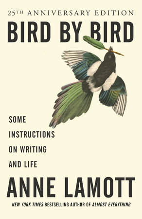
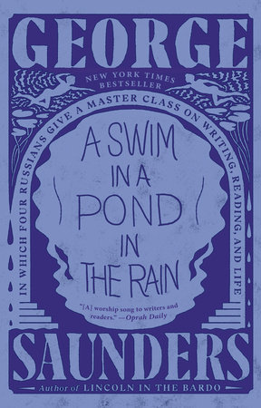
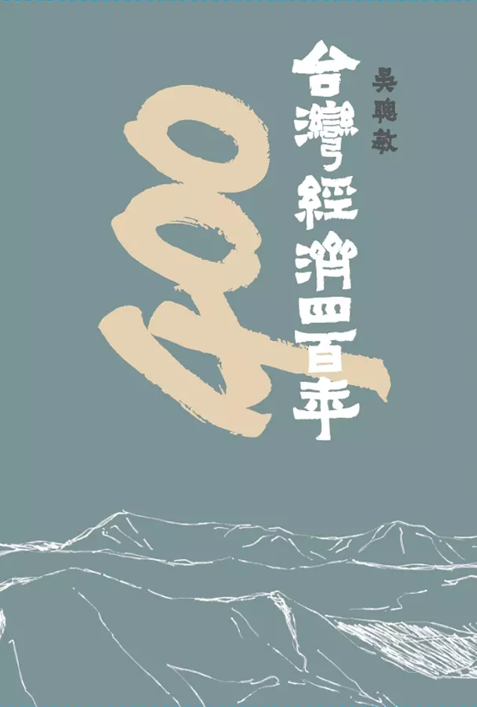
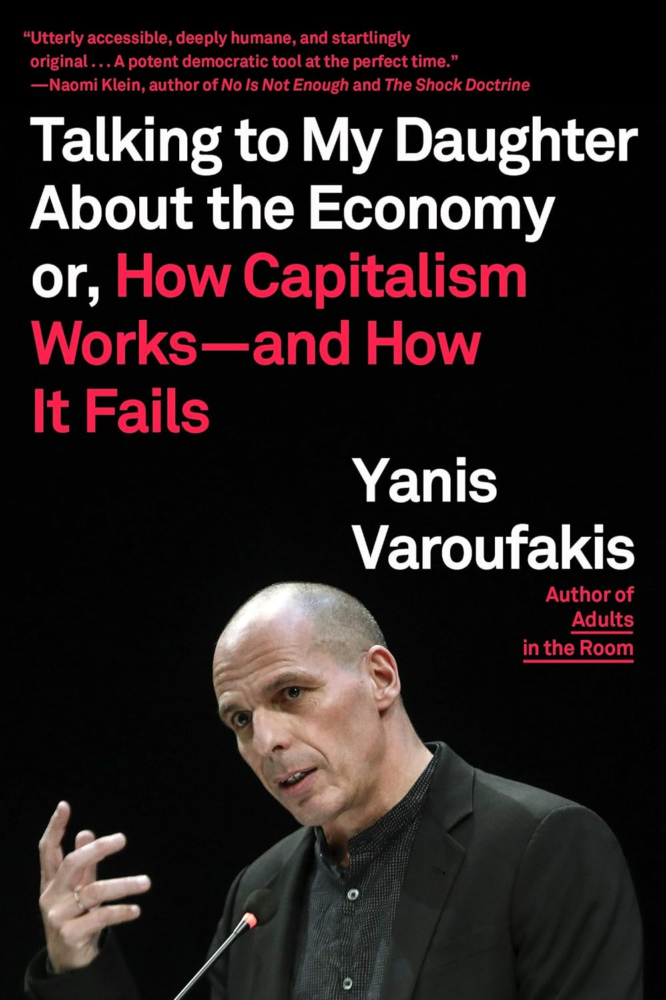
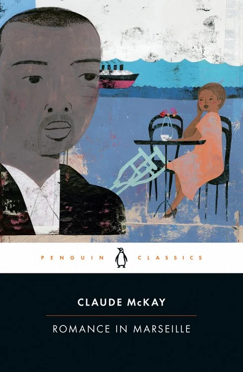
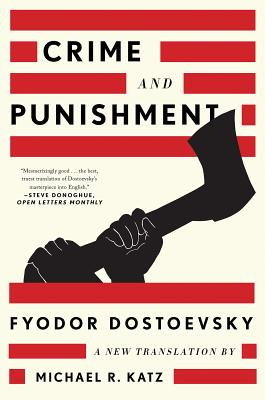
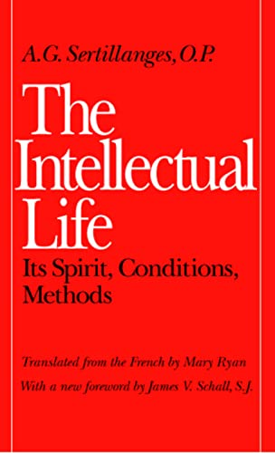

All the tags:

August 6, 2025
之前不只在一個地方聽過這本書，這個夏天終於買下來好好讀完。作者說關於寫作他所知道的一切都在這本書裡了。書中有幾篇是談寫作的基本元素，有幾篇是談寫作的心態，也有談建立支持寫作的系統。但這本書最棒的地方是，即便不是以寫作為職志的人依然能從這本書感到鼓勵與安慰。

September 25, 2024
前幾個月，想讀書但卻找不到想讀的書。有點想讀小說，只是怕讀不出什麼深刻的感受。也想讀非虛構的書，但擔心會被一堆事實轟炸到讀不下去。當時這本書的出現真的滿足了我兩個矛盾的需求。本書的作者在雪城大學教授寫作多年，把多年的教學濃縮成這本書。書中用七篇十九世紀俄國的短篇小說為範本，討論了關於故事的基本命題，也分享身為小說創作者的經驗與心得。這本書我讀得很開心，有好看的故事，也跟著書中的分析一起思考：什麼是好的故事？我又是怎麼體驗故事？

February 19, 2024
1624 年荷蘭人佔領大員，臺灣開始有了經濟活動的紀錄，到今年剛好 400 年。比起 400 年前，臺灣人現在的生活絕對是富足且健康。尤其在 1960-2000 年期間，臺灣人均國內生產毛額更是全世界第一。這到底是由於曾經的縝密擘劃？英明領導？還是這是一座神選之島，充滿幸運與機運？

November 9, 2023
在這本不到 200 頁的小書中，作者用父親柔和的語氣向女兒解釋資本主義的發展軌跡、運作邏輯，以及討論在現代社會中資本主義與科技、政治與生態間的拉扯。可以想像同時要分析這些嚴肅的議題還要保持論理的流暢，有多困難。作者用希臘神話與電影闡明許多經濟學中的核心概念與爭議，讓這本書讀起來格外清新。

July 25, 2023
這本書是去年在 Aesop 的 Queer Library 免費拿的，拖了一年才翻開來讀。一翻開才知道這本書從完稿到出版花了超過八十年，到 2020 年才第一次出版。會被選進 Queer Library，當然書中有些角色跳脫傳統性別框架，但性別並非這部小說的主軸。這部小說平實的呈現了在馬賽港口區各種不同族裔背景，不同性別組合，不同身體條件的人們所發生的激情故事。

June 23, 2023
故事發生在 1860 年代的聖彼得堡。二十歲出頭的主角 Rodya 計畫殺掉壓榨窮人的典當商婦人，殺人之後，他卻陷入道德矛盾與心理煎熬。第一次看這本小說時，150 多年前的謀殺與逃匿情節現在讀起來依然刺激。重看的時候，才漸漸讀出 Rodya 的心理發展，以及最後的救贖。我讀的這個譯本，前面有一篇簡介，對於理解小說的時代背景頗有幫助。

March 24, 2023
一百多年前的道明會修士以神學家阿奎那的訓誡為基礎，把建立「知識人生」的指南寫成這本小書。從內在的品德心態，生活的建立，到如何記憶、如何做筆記書中都有手把手的討論與建議。看完之後，我覺得比起知識從業者如研究者或修士，一般人更能從這本書找到切身的鼓勵與建議。